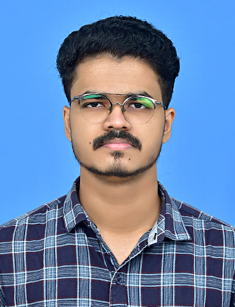

ROHAN M V
Personal Profile
To pursue a challenging career and be part of progressive organization that gives a scope to enhance my knowledge and utilizing my skills towards the growth of the organization.
Contact Details
Academic Profile
- Degree
- Course : Bachelor of Computer Applications
- University : Calicut University
- College : Yuvakshetra Institute of Management Studies, Mundur, Palakkad
- Year of passing : 2021
- Percentage : 81.20 %
- Diploma
- Course : PDWD
- Board : Kerala State Rutronix
- Institution : Compex Compuer Education
- Year of passing : 2018
- Percentage : 79.77 %
- Twelfth
- Stream : Computer Science
- Board : CBSE
- School : Seva Sadan Central School, Pathiripala, Palakkad
- Year of passing : 2018
- CGPA : 7.4/10
- Tenth
- Board : CBSE
- School : Seva Sadan Central School,Pathiripala,Palakkad
- Year of passing : 2016
- CGPA : 10/10
Skills
- HTML , CSS , JavaScript , Bootstrap
- C , C++ , Java , PHP , MySQL
- Git , GitHub
- MS Office : Excel , Word , PowerPoint
- Operating Systems : Windows (10/8/7),Linux